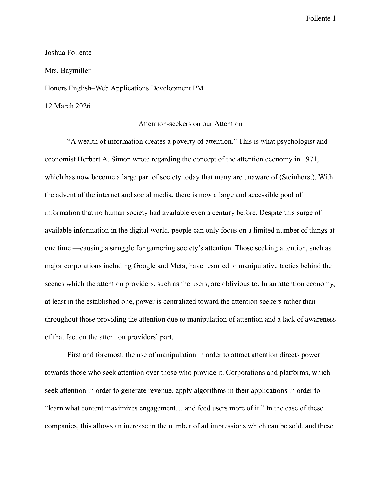
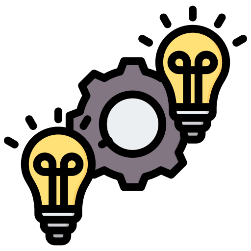
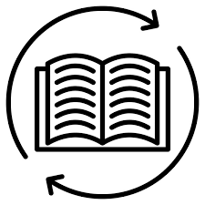

This was a timed-writing assignment in which I had four class hours, where requirements stated that working out of class time was forbidden, to write an argumentative paper on whether attention-seekers or attention-providers hold the power in an attention economy.


Information Synthesis: I utilized information from the two provided sources and also a provided poem in order to create a line of thought that supports my argument.
Working under Pressure: I gained the experience of having to complete a low-guidance writing project in a very short amount of time with a strict deadline.
I was having difficulty coming up with a good thesis statement that would be well supported by the provided sources.
I attempted to brainstorm ideas at home, trying to come up with an argument without actually working on the essay, which is still working within restrictions.
I struggled to stay on pace with everyone else when it came to project completion.
I realized that I had to work at a pace out of my comfort zone, and in the last hour of the project, I completed the majority of the paper, starting from the middle of the first body paragraph, compared to the previous three days.
I had trouble integrating the poem, which was much more abstract compared to the concrete evidence from the other sources, into my argument.
I quickly came up with the idea of using the content stated in the poem to reinforce a point that I had already made using concrete evidence, rather than making a whole new point that is only supported by the poem.
Continuous Learning: I didn’t have much proficiency with very strictly timed writing projects before completing this assignment, so it became a learning experience that helped me familiarize myself with a faster workflow than I was used to.
Resilience: Until the last day we had to work on this project, I was behind the pace which the majority of the other students were at. I didn’t give up, however, and focused within the last hour of the work period to complete the project to a satisfactory level.
